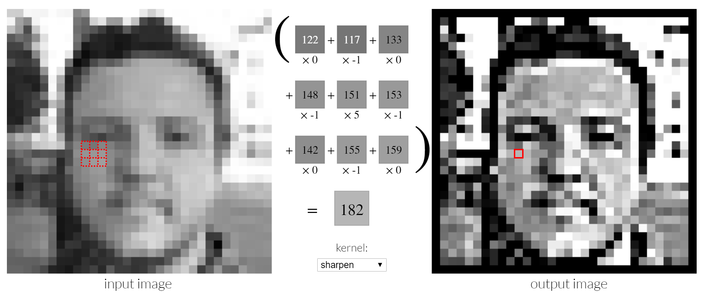

Architectures of Convolutional Neural Networks: VGG

There are a number of specialized neural network layers
MNIST - Using a model already trained
Exploring the different types layers together

How do Convolutions work - Image Kernels
You might know from Photoshop etc., used in Convolutional Neural Networks
Experiment with Image Kernels
- How can a matrix of numbers represent an image? How could you encode color?
- Explain the effect the filter kernels Sharpen and Blur have on the sample image - explain the effect of the specific values to the result
- Starting from the identity kernel - how can you create a filter that highlights edges on the top of shown digits? What about the bottom?
http://setosa.io/ev/image-kernels/
Sample image:
https://github.com/DJCordhose/speed-limit-signs/raw/master/data/real-world/4/100-sky-cutoff-detail.jpg
Keras layers
Convolution
model.add(Conv2D(filters=32, activation='relu'))
Max Pooling
model.add(MaxPooling2D())
Flatten 2d to make it accessible to Dense layers
model.add(Flatten())
One Example: Google Inception V3